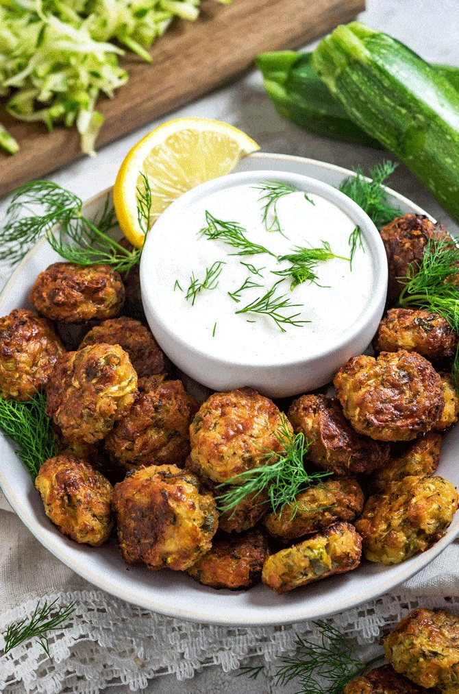
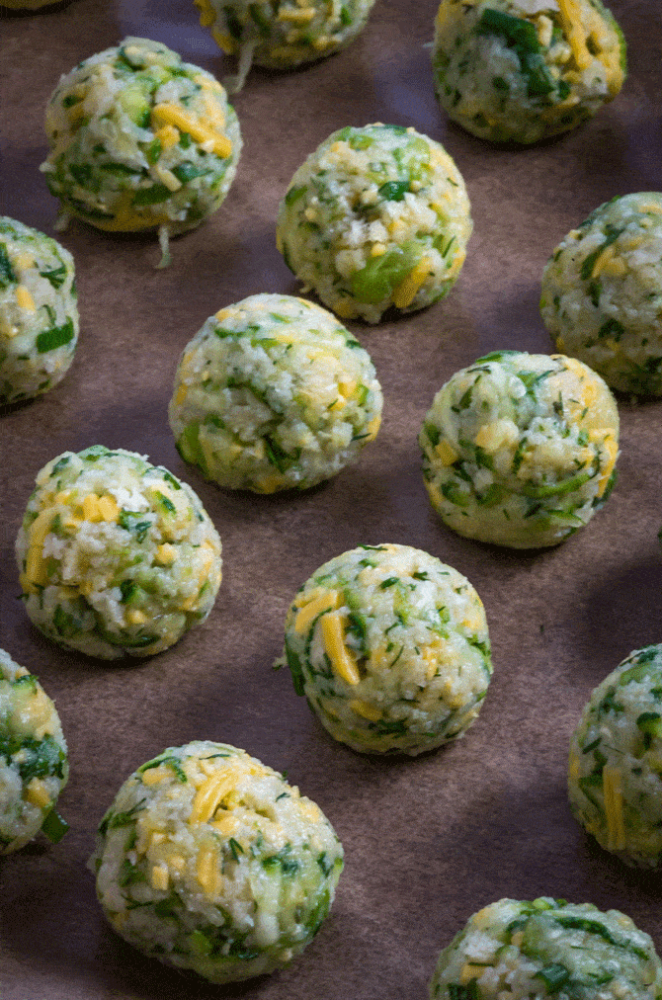

These Cheesy Garlic Zucchini Bites are delicious nuggets of savoury goodness! They are golden-brown and crispy on the outside and tender on the inside. The crispy bottoms from the melted cheese are the best part. In all, there are only eight ingredients. They are so simple to prepare! It’s wonderful to serve as a snack, appetizer, or even as a side dish. It’s tasty to eat on its own, but also scrumptious when dipped in tzatziki sauce, marinara sauce, or sour cream. I hope you enjoy this recipe!


Prep time: 20 minutes Cook time: 30 minutes Serving: 30 bites
INGREDIENTS
- 2 cups shredded and patted dry zucchini (from about 2 medium-sized zucchini)
- 1 1/4 cup plain panko bread crumbs
- 1 cup shredded cheddar cheese
- 1 large egg
- 1/2 cup finely chopped green onion
- 2 tablespoons chopped dill
- 1 teaspoon salt
- 1 teaspoon garlic powder
INSTRUCTIONS
- Preheat oven to 400°F. Line a baking sheet with parchment paper and set aside.
- In a large bowl, stir together the zucchini, panko bread crumbs, cheddar cheese, egg, green onion, dill, and seasonings until well-combined.
- One tablespoon at a time, press the zucchini mixture into small balls. Place onto the baking sheet and repeat until all of the zucchini mixture has been used up.
- Bake until browned and crisp, about 30 minutes, flipping halfway through.
- Serve warm with desired dipping.